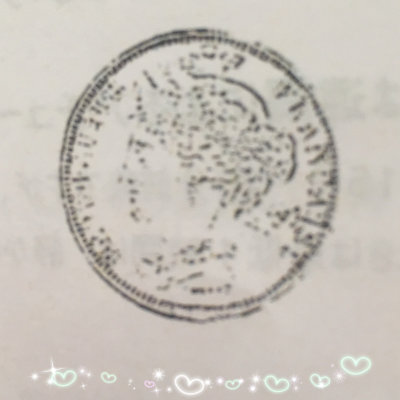

「豊穣」という言葉が象徴するあらゆる豊かさにアクセスし、本当の自分らしさを見出すためのワークです。もっと自由に自分らしく生きたい方に
このアチューンメントを受けると、アバンダンティアとの繋がりができます。
その後、他の人にアチューメントをしたり、お守りのコインでアバンダンティアとの繋がりを深めることで、ますます豊かさを感じられるようになります。
| アバンダンティア・アバンダンスレイ アチューメント (テキスト、認定証付) |
|
|---|---|
| 受講形式 |
対面 / Skype / LINE通話 (60分) 遠隔 (30分) |
| アバンダンティア・アバンダンスレイ アチューメント | ¥11,000 |
※対面は、大阪府枚方市東香里近辺の自宅サロンにて行います。対面のお申し込み確定後、詳しい住所をおしらせします。

※伝授の際には、コインを一枚ご用意ください。